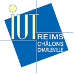

|  |
Le département Réseaux et Télécoms crée en 1998 est un département délocalisé de l’IUT Reims Chalons Charleville. Notre département accueille aujourd’hui 120 étudiants répartis sur 3 formations :
Nos formations sont accessibles après la Validation d’Acquis Professionnels (V.A.P). Ces diplômes peuvent être délivrés par la voie de la Validation des Acquis de l’Expérience. (V.A.E).
Le département Réseaux et Télécommunications de Chalons en Champagne est homologué "Académie Locale Cisco" depuis 9 années.
Cette formation de 1800 Heures se déroule sur 4 semestres.
Elle comporte des cours (CM) des travaux dirigés (TD) et des travaux pratiques (TP).
La réalisation d’un projet tuteuré et un stage en entreprise de 10 à 12 semaines complètent la formation de l'étudiant.
D’autre part, pendant les 4 semestres, les étudiants suivent le cursus de formation préparant à la certification professionnelle réseau Cisco CCNA.
Cette formation est ouverte aux titulaires d’un BTS, d’un DUT ou d’un DEUG scientifique.
Elle se déroule sur une année et comprend 450H de formation, la réalisation d’un projet tuteuré et un stage en entreprise de 16 semaines (de février à juin)
Notre département accueille chaque année 15 étudiants dans cette formation. Les principaux domaines techniques abordés sont les suivants :
15 étudiants suivent chaque année cette formation en alternance sous contrats d’apprentissage ou contrats de professionnalisation.
Ils complètent alors leur formation à l’IUT par 36 semaines en entreprise selon un rythme de 1 semaine à l’IUT/ 3 semaines en entreprise.
De plus, le service de formation continue et alternance de l’IUT dont dépend cette formation est certifiée ISO 9001 version 2000.
Après validation d’une expérience professionnelle significative, de nombreux métiers sont visés par cette formation comme :
Ces métiers offrent actuellement de nombreux débouchés dans :
Ces domaines sont extrêmement porteurs en termes d’emplois. Toutes nos enquêtes à trois mois et deux années après l’obtention du diplôme montrent que le taux d’insertion de ces diplômés est excellent (proche de 100%) dans des délais très courts (moins de 3 mois en moyenne)